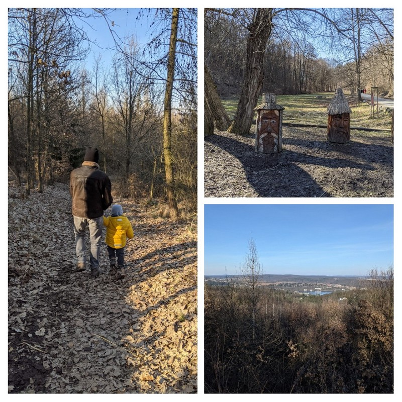
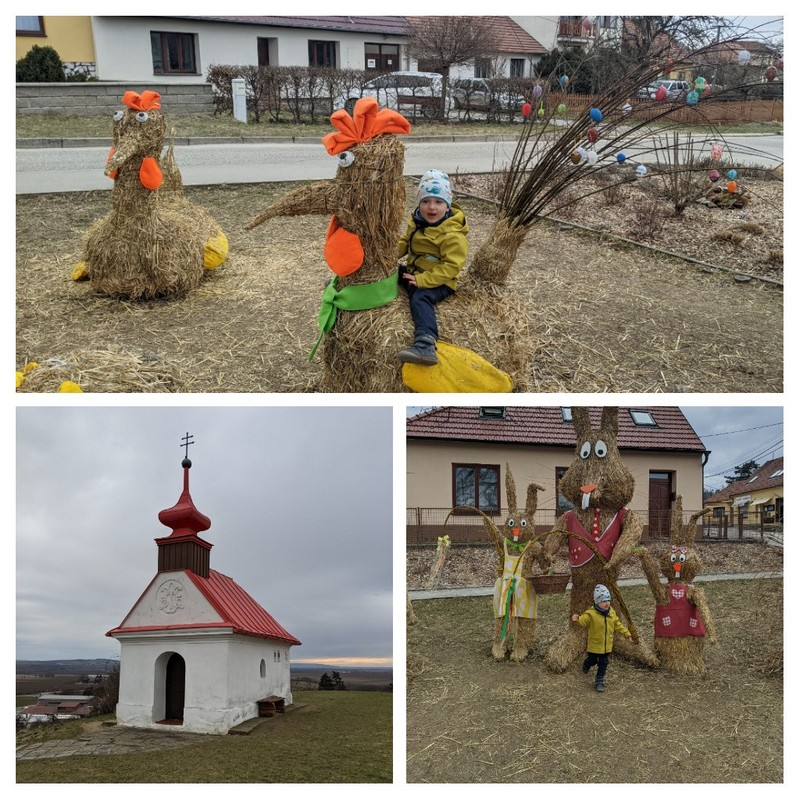
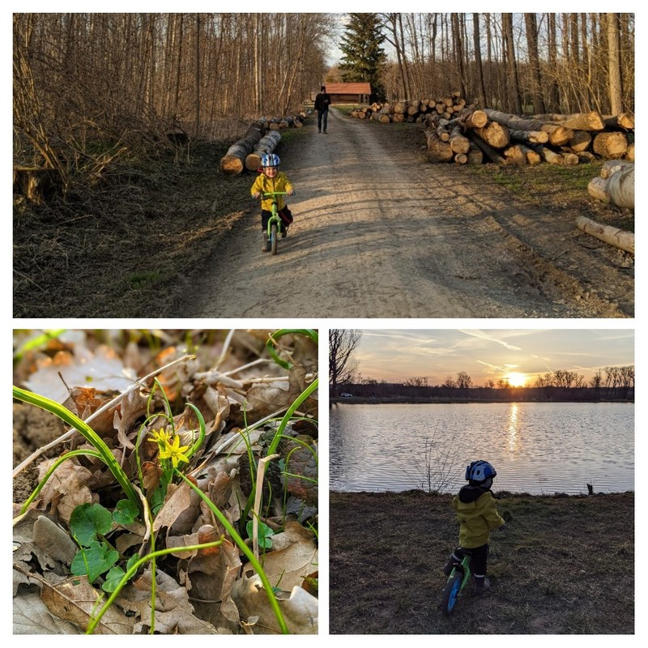
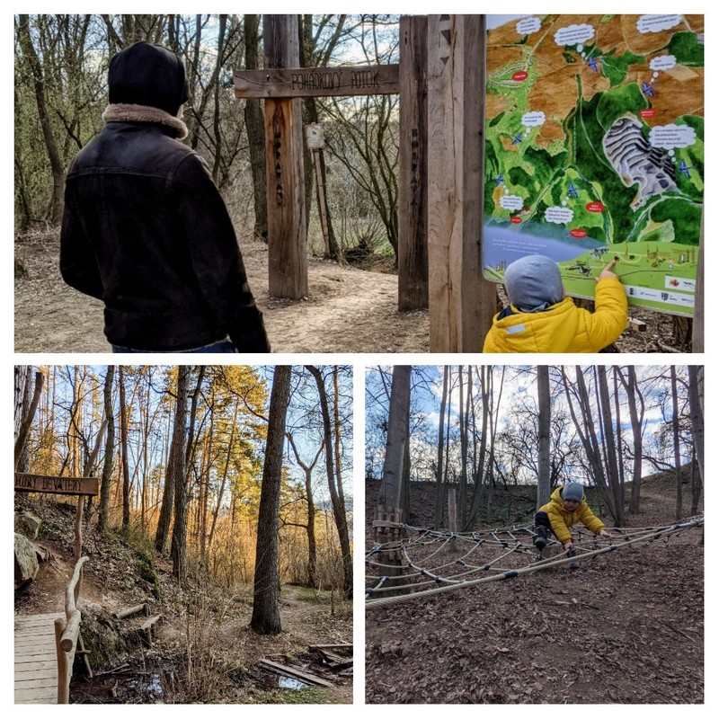
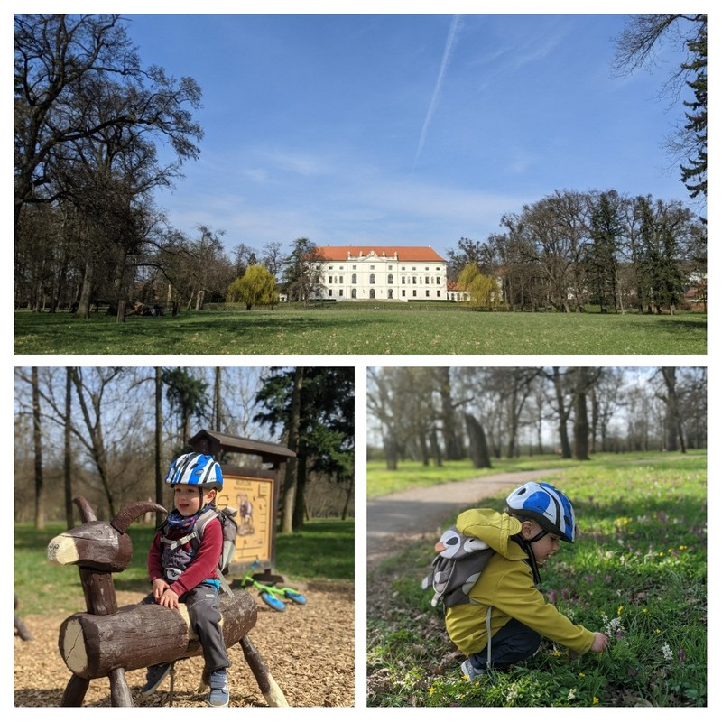
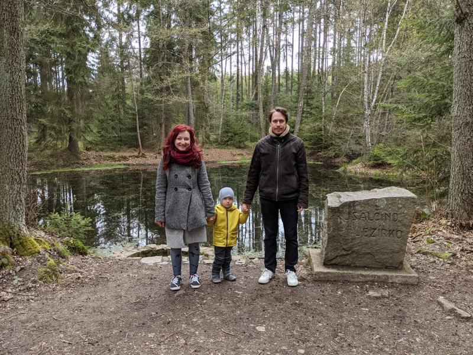
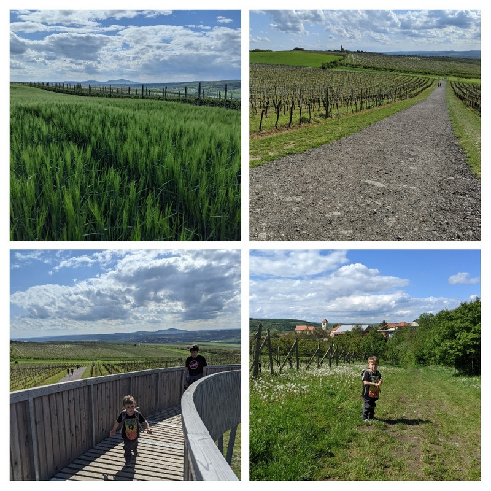

S jarem (a dalším lockdownem) jsme rozjeli výletovou sezonu (z počátku v mezích našeho okresu 8-) ve velkém. Až mám obavy, aby se mi sem všechny ty zážitky vlezly :-)
Rozhledna Chvalovka
Nejprve jsem byla trochu nešťastná, když jsem přemýšlela, kam budeme ty tři týdny jezdit na výlety, aniž bychom se tam potkali se zbytkem Brna… Ale brzy jsme zjistili, že i v rámci okresu Brno-město je stále spoustu hezkých míst, kde jsme dosud nebyli a kde by to nemusela být úplně boxovaná v davu. Jedním z těch míst je i vyhlídka Chvalovka nad Bystrcí. Hned na začátku stezky najdete několik dřevěných postaviček, mezi nimiž nechybí Krteček nebo králíci z klobouku, což dětské účastníky výletu dobře naladí :-) A pak už cesta pokračuje hezky do kopce a lesem. Nutno podotknout, že rozhledna jako taková je dost punk - v podstatě se jedná o jakýsi posed, takže s malými dětmi bych se až nahoru určitě nedrápala. Procházka lesem byla každopádně moc příjemná, ač cíl nás mírně zklamal.

Pozořické slámové Velikonoce a Santon
O Pozořicích a jejich slámovém umění už jsem tady psala v článku o našich zimních výletech, kdy jsme navštívili zdejší proslulý Betlém. Na Velikonoce si místní rovněž připravili tematickou výzdobu, a protože o Vánocích se nám tu moc líbilo, rádi jsme si sem udělali výlet znovu. Na zpáteční cestě jsme se ještě zastavili na Santonu, kolem kterého vždycky jezdíme po dálnici, ale dosud jsme tam nebyli. Na kopečku nás čekal pěkný rozhled a kousek pod vrcholem i stylová keška, byť v poněkud náročnějším terénu.

Rajhradská bažantnice
Tenhle výlet byl dalším příjemným překvapením. Rajhrad sám o sobě je super výletním cílem a vůbec by mě nenapadlo, že na cestě po bažantnici nás čeká tolik vyžití. Jednak to tam je naprosto skvělé pro malé cyklisty, protože tu není velký provoz, takže Oli tam mohl drandit hlava nehlava. Bažantnici jsme navíc navštívili v době, kdy začínal růst medvědí česnek, takže to v lese nádherně vonělo a odnášeli jsme si plnou tašku, z níž jsem pak doma vyráběla lahodné pesto. A i ty bažanty jsme nakonec viděli :-)! Baby bonus navíc: Před vstupem do bažantnice potkáte pěkné nové hřiště s výhledem na klášter.

Naučná stezka Pohádkový potok, Nebovidy
Na tuto stezku jsme se chystali už na podzim, ale došli jsme pouze ke studánce u víly Vrbičky a vrátili se, protože les byl po deštích moc rozbahněný. Tentokrát jsme nevyráželi z Moravan, ale z Nebovid, a přestože se zpočátku zdálo, že jsme si možná naplánovali až moc velký okruh, O. to ušel úplně v pohodě. Naučná stezka je totiž opravdu zábavná a krásně ztvárněná - každé zastavení odkazuje na nějakou pohádku (jak napovídá samotný název stezky) a doplňují ho různé interaktivní prvky, jako dendrofon nebo “pavoučí síť” na prolézání.

Židlochovický zámecký park
Další vydařený výlet jsme podnikli do nedalekých Židlochovic. Rozsáhlý zámecký park překvapí především tím, že se v něm zcela volně prohánějí jeleni a mufloni. Naše dítě pak zaujalo také to, že kousek za zdmi parku vedou koleje, takže zde můžete pozorovat i o víkendu ne příliš čilý železniční ruch :-) Doporučuji přibalit odrážedlo a pečlivě se rozhlížet kolem sebe, protože tu hodně frčí hra s malovanými kamínky, která příjemně zpestří každý výlet :-)

Rusalčino jezírko, Vysoká u Příbrami
A teď výjimečně jeden středočeský výlet, a sice do Vysoké u Příbrami, která je známá jako venkovské sídlo Antonína Dvořáka. Právě při procházkách okolními lesy k rašelinovému jezírku, které dnes nese přízvisko “Rusalčino”, prý Antonín Dvořák čerpal inspiraci pro jedno ze svých nejslavnějších děl - operu Rusalka. Procházka hustým lesem v ponurém odpoledni měla své kouzlo a navíc byla vyšperkována i honbou za ukrytými malovanými kamínky - bojovkou, kterou tu pro malé turisty vytvořil Sokol Příbram.

Rozhledna na Kobylím vrchu
No a zakončit to tu nemůžeme ničím jiným, než výletem mezi vinice, který má své kouzlo i na jaře, kdy do vinobraní je ještě daleko :-) Rozhledna na Kobylím vrchu je báječná především svým netypickým tvarem a bezbariérovostí - nemusíte se sem bát vystoupat ani s těmi nejmenšími (ač na vrcholku se to tedy povážlivě kýve :D). Dechberoucí výhled na okolní vinice a Pálavu na obzoru je už jen třešinkou na dortu. Z Kobylí jsme odjížděli bohatší o další krásný zážitek a 6 lahví vína. A to na těch výletech na jih milujeme především :D!
